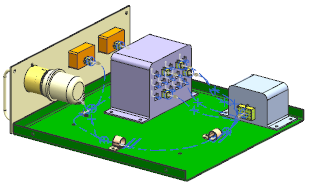

Open rte1_drawer_assm_5.

This wiring assembly is similar to the one you worked on earlier. It contains several more 4–pin connectors on the control unit and the bulkhead has been removed for clarity. All of the path segments you need for this activity have been created for you in the wiring harness subassembly, rte1_drawer_harness_5.